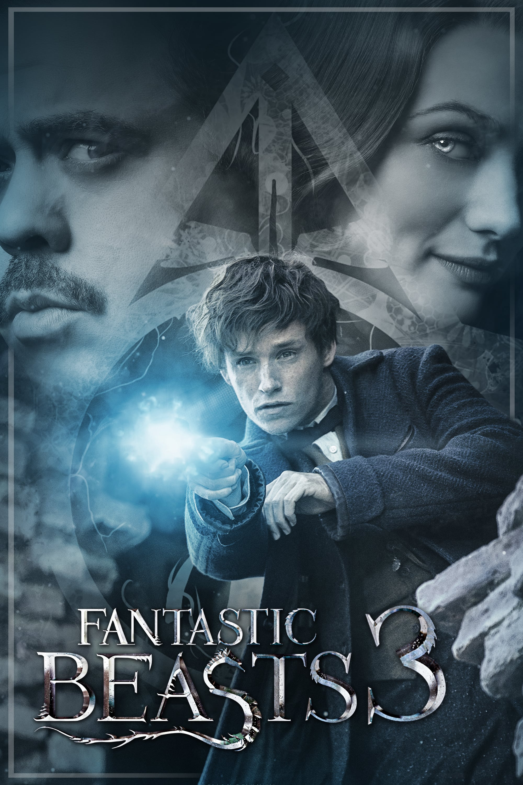

Фильм который мне больше всего не понравился.Я не люблю фильмы на подобие таких т.кю как по мне они слишком скучные.Ну может быть есть любители,но я не один из них
Фантастические твари и где они обитают 3
Самое ожидаемое кино

После просмотра 1 и 2 части этого фильма,мне сразу захотелось узнать выйдет ли 3 часть.Узнав что она выйдет я так обрадовался что чуть не упал с дивана.Я очень люблю фильмы жанра фэнтэзи.
Дитя погоды
Просмотренное аниме
как по мне японцы сумасщедшие, они делают настолько реалистичную и красивую рисовку, что хочется перейти и жить в этом мире.Мне больше всего понравилась интрига,драма которые так ярко показаны в этом аниме. [шедевр Макото Синкая]